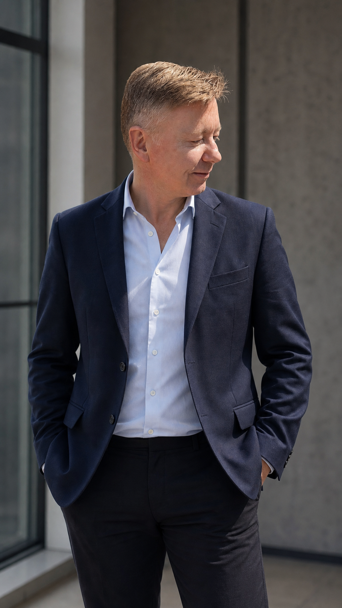

01
Developing leaders, not dependency
Coach and develop Senior Software Engineers who also line-manage mid-level engineers, helping them navigate people leadership and build capability within their own teams.
Software Engineering Manager · Leader of leaders
I develop people and emerging leaders, create clarity around complex delivery, and connect engineering decisions with customer and business outcomes.
Based in the UK · Working remotely

About
I’m a Software Engineering Manager with experience across engineering management, software and data engineering, architecture and analytics. That breadth helps me connect people, technology, delivery and business outcomes.
Today I lead a cross-functional engineering team responsible for high-profile, customer-facing Free-to-Play products at Sky Betting & Gaming, part of Flutter Entertainment. My scope includes developing senior engineers who have their own line-management responsibilities, helping them strengthen their leadership practice and support the growth of their teams.
I’m technically informed without needing to be the person holding every answer. My job is to create the conditions in which others can make sound decisions, solve difficult problems and deliver with confidence.
Selected impact
01
Coach and develop Senior Software Engineers who also line-manage mid-level engineers, helping them navigate people leadership and build capability within their own teams.
02
Lead a project to bring the Free-to-Play technology stack in-house, coordinating engineering work and dependencies across teams and stakeholders.
03
Support delivery across major sporting products and events, including World Cup initiatives, while improving resilience and readiness for significant peaks in demand.
04
Contribute to engineering strategy, standards and capability, partner across Product, Delivery and Architecture, and serve as an Incident Commander within the on-call rota.
I lead by creating the conditions for others to thrive; building trust, removing obstacles and developing the capability of my team so they can solve problems, make decisions and deliver outcomes with confidence.
Make direction, expectations and priorities understandable.
Give people genuine ownership, supported by psychological safety.
Coach through questions, feedback and meaningful stretch opportunities.
Own outcomes, speak honestly and learn without blame.
Career
2020—Present
Engineering Manager, following roles as Lead Software Engineer and Data Engineer.
2019—2020
Data Warehouse Architect, leading the architecture and continued development of data-warehouse capabilities.
2015—2019
MI Data Analyst, translating organisational needs into reporting, analysis and technical delivery.
2003—2015
Progressive customer, data and leadership roles spanning MI, business partnering and credit-risk leadership.
Professional development
Beyond the job title
Integrity, accountability, resilience, optimism and relationships are the values I return to - especially when the work is uncertain or the decisions are difficult! I believe good leadership is serious about outcomes without losing sight of the people delivering them.
Connect